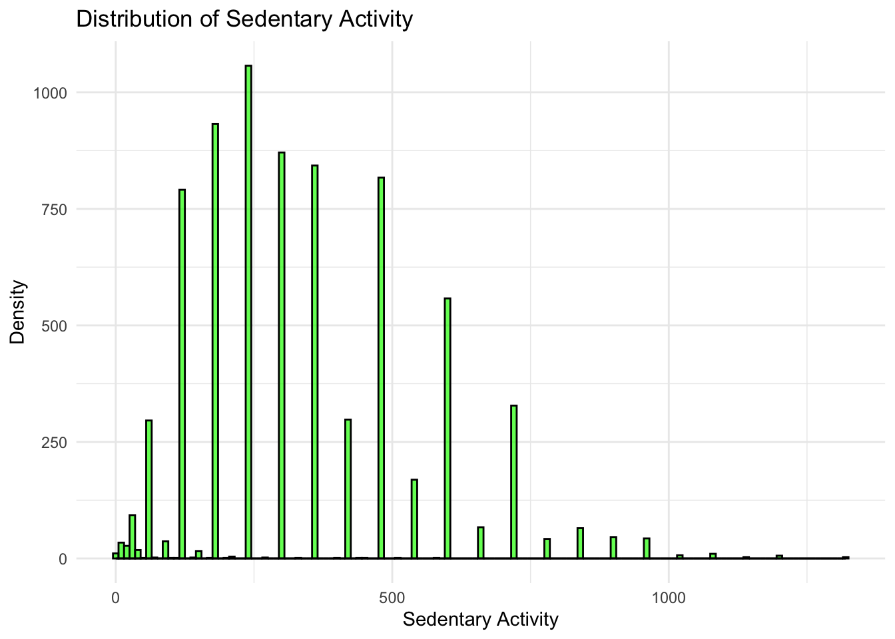
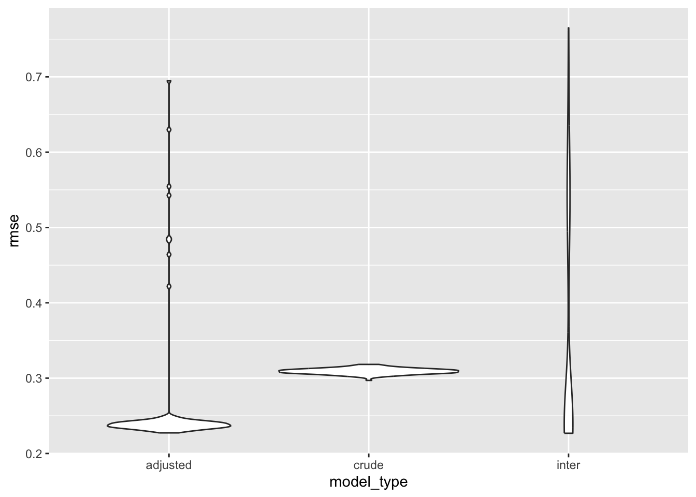
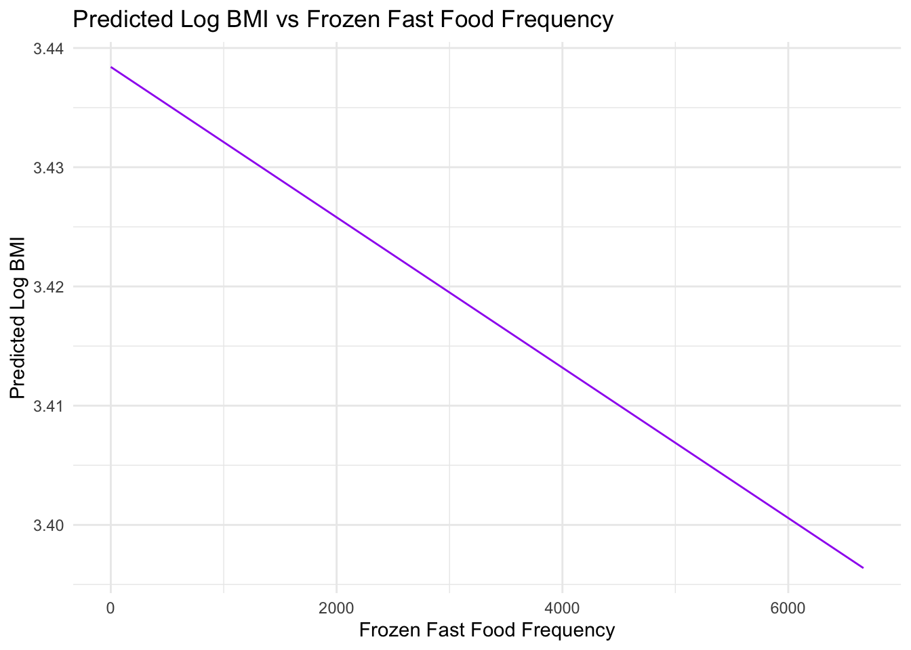
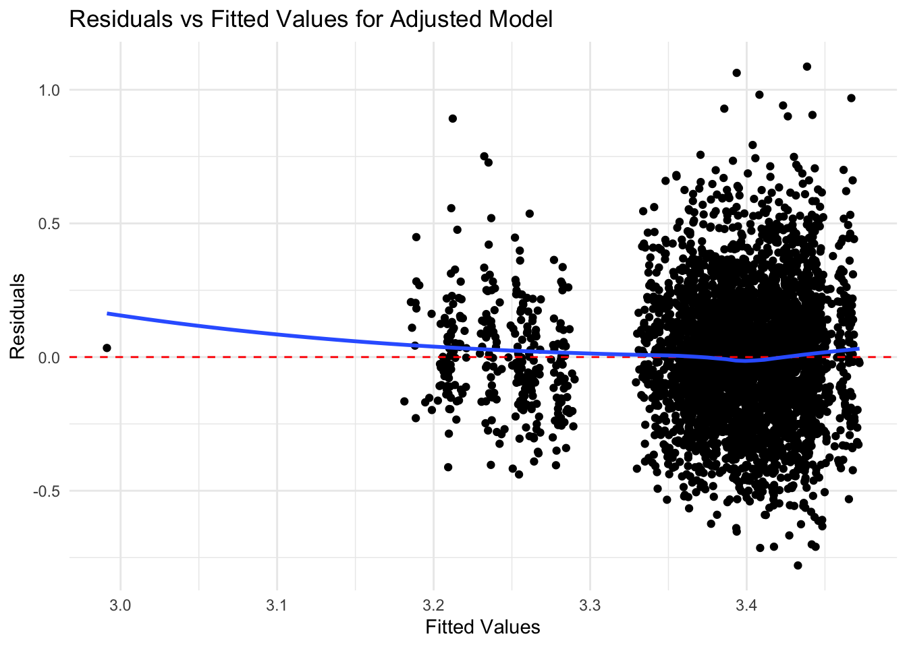
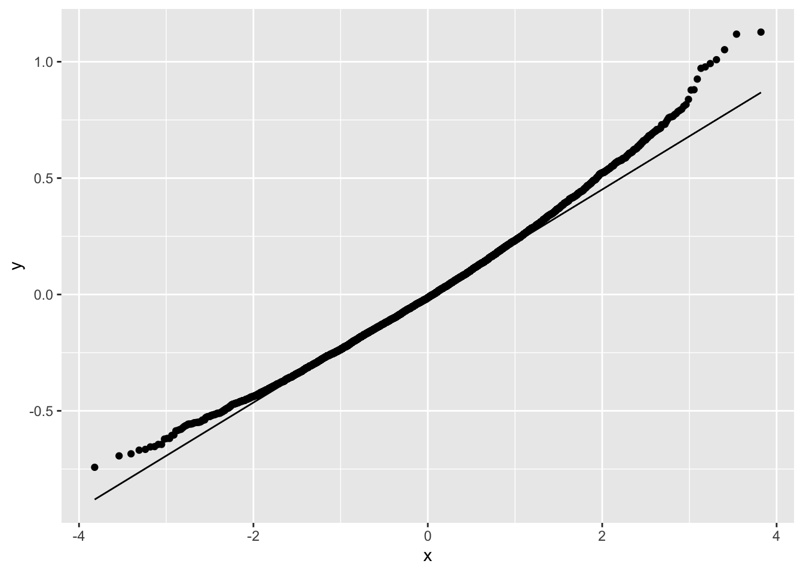

P8105 Fall 2023 Final Project Proposal
Distribution Plot
# Histogram for BMI
ggplot(obesity, aes(x = bmi)) +
geom_histogram(binwidth = 1, fill = "blue", color = "black") +
labs(title = "Distribution of BMI", x = "BMI", y = "Count") +
theme_minimal()
# Density plot for BMI
ggplot(obesity, aes(x = bmi)) +
geom_density(fill = "blue", alpha = 0.5) +
labs(title = "Density Plot for BMI", x = "BMI", y = "Density") +
theme_minimal()
# Boxplot for BMI
ggplot(obesity, aes(y = bmi, x = 1)) +
geom_boxplot(fill = "blue", alpha = 0.5) +
labs(title = "Boxplot for BMI", x = "", y = "BMI") +
theme_minimal()
The histogram and density plot indicate that the distribution of
BMI is right-skewed, which is a common observation in
health-related data.
When the response variable in a regression model, BMI, in our case, is not normally distributed, we took a common approach is to apply a transformation to achieve normality. The logarithmic transformation is particularly useful because it is a monotonic transformation that can handle positive skewness by compressing the long tail and expanding the lower end of the distribution. This can make the distribution more symmetric and more closely approximate the normal distribution, which meets the assumptions of linear regression.
By transforming BMI using the natural logarithm, we can
stabilize the variance (homoscedasticity) and make the relationship
between the predictors and the response variable more linear. This is
beneficial because linear regression assumes a linear relationship
between the predictors and the outcome variable.
Cross-Validation and Model Comparison for Predicting BMI Based on Fast Food Frequency
First, we compare the three models for predictor fast food frequency
cv_df =
obesity |>
crossv_mc(n = 100) |>
mutate(
train = map(train, as_tibble),
test = map(test, as_tibble)
)
cv_results =
cv_df |>
mutate(
model_fast_crude = map(train, \(df) lm(log(bmi) ~ freq_fast_food, data = df) ),
model_fast_adjusted = map(train, \(df) lm(log(bmi) ~ freq_fast_food+age+gender+marital_status+ race+education+income_to_poverty, data = df)),
model_fast_inter = map(train, \(df) lm(log(bmi) ~ freq_fast_food*education+freq_fast_food*income_to_poverty+freq_fast_food+age+gender+marital_status+ race+education+income_to_poverty, data = df))
) |>
mutate(
rmse_fast_crude = map2_dbl(model_fast_crude, test, \(mod, df) rmse(mod, df)),
rmse_fast_adjusted = map2_dbl(model_fast_adjusted, test, \(mod, df) rmse(mod, df)),
rmse_fast_inter = map2_dbl(model_fast_inter, test, \(mod, df) rmse(mod, df))
)Plot of Model Comparison of Fast Food Frequency
cv_results |>
select(starts_with("rmse")) |>
pivot_longer(
everything(),
names_to = "model_type",
values_to = "rmse",
names_prefix = "rmse_"
) |>
group_by(model_type) |>
summarize(m_rmse = mean(rmse))## # A tibble: 3 × 2
## model_type m_rmse
## <chr> <dbl>
## 1 fast_adjusted 0.320
## 2 fast_crude 0.490
## 3 fast_inter 0.342cv_results |>
select(starts_with("rmse")) |>
pivot_longer(
everything(),
names_to = "model_type",
values_to = "rmse",
names_prefix = "rmse_"
) |>
ggplot(aes(x = model_type, y = rmse)) +
geom_violin()
fast_adjustedmodel has a lower median with most of its data concentrated at the lower end of the rmse scale, which suggests better predictive performance for most of its predictions compared to the other models.fast_crudemodel has a wider spread of values, indicating less consistency in predictive performance.fast_interhas most of its data concentrated at the low end like fast_adjusted, but the long tail indicates there are also quite a few cases where its predictions are much worse.
Considering this, fast_adjusted seems to be the best
model overall due to its concentration of lower rmse values, although
fast_inter may also perform similarly well for the majority
of predictions but has some predictions with high error.
Interpretaion: For one unit increase in number of meals from fast food or pizza place, the bmi will decrease by 0.0026 kg/m^2, while adjusting for all other covariate in the model.
Cross-Validation and Model Comparison for Predicting BMI Based on Sendendary Activity
# Histogram and Density Plot for Sedentary Activity
ggplot(obesity, aes(x = sedentary_activity)) +
geom_histogram(binwidth = 10, fill = "green", color = "black", alpha = 0.7) +
geom_density(alpha = 0.2, adjust = 1/5) +
labs(title = "Distribution of Sedentary Activity", x = "Sedentary Activity", y = "Density") +
theme_minimal()
Step 1: Model building for sedentary activity with log(BMI)
cv_df_sedentary =
obesity |>
crossv_mc(n = 100) |>
mutate(
train = map(train, as_tibble),
test = map(test, as_tibble)
)
cv_results_sedentary =
cv_df_sedentary |>
mutate(
model_sed_crude = map(train, \(df) lm(log(bmi) ~ sedentary_activity, data = df)),
model_sed_adjusted = map(train, \(df) lm(log(bmi) ~ sedentary_activity+age+gender+marital_status+race+education+income_to_poverty, data = df)),
model_sed_inter = map(train, \(df) lm(log(bmi) ~ sedentary_activity*education+sedentary_activity*income_to_poverty+sedentary_activity+age+gender+marital_status+race+education+income_to_poverty, data = df))
) |>
mutate(
rmse_sed_crude = map2_dbl(model_sed_crude, test, \(mod, df) rmse(mod, df)),
rmse_sed_adjusted = map2_dbl(model_sed_adjusted, test, \(mod, df) rmse(mod, df)),
rmse_sed_inter = map2_dbl(model_sed_inter, test, \(mod, df) rmse(mod, df))
)cv_results_sedentary |>
select(starts_with("rmse_sed")) |>
pivot_longer(
everything(),
names_to = "model_type",
values_to = "rmse",
names_prefix = "rmse_sed_"
) |>
ggplot(aes(x = model_type, y = rmse)) +
geom_violin()
Summary of Cross validation Results- Sendendary Activity
rmse_summary = cv_results_sedentary |>
select(starts_with("rmse_sed")) |>
pivot_longer(
everything(),
names_to = "model_type",
values_to = "rmse",
names_prefix = "rmse_sed_"
) |>
group_by(model_type) |>
summarize(m_rmse = mean(rmse))
kable(rmse_summary, format = "markdown", caption = "Summary of RMSE for Sedentary Models")| model_type | m_rmse |
|---|---|
| adjusted | 0.2354447 |
| crude | 0.2374056 |
| inter | 0.2353406 |
In the context of these models, a lower RMSE indicates a more accurate prediction of BMI from the predictors used in the model.
The cross-validation results show that the mean RMSE for the adjusted and inter (interaction) models are both 0.235, while the crude model has a slightly higher RMSE of 0.237. In this case, both the adjusted and inter models perform slightly better than the crude model, as indicated by their lower RMSE values, which means they are, on average, closer to the true BMI values when log-transformed.
A valid reason we choose the adjusted model over the inter model, despite having the same RMSE, could be due to its simplicity and interpretability. The adjusted model includes additional covariates (age, gender, marital status, race, education, and income to poverty ratio) that are expected to be related to BMI based on previous research or theoretical considerations. Including these covariates allows the model to account for more variability in BMI that is explained by these factors.
Moreover, while interaction terms in the inter model may capture the combined effects of sedentary activity with other variables, they can make the model more complex and harder to interpret.
We proceed the model statistics in adjusted model for sedentary activity.
Adjusted Model
# Step 1: Generate new data for plotting
new_data <- with(obesity, expand.grid(
sedentary_activity = seq(min(sedentary_activity, na.rm = TRUE), max(sedentary_activity, na.rm = TRUE), length.out = 100),
age = mean(age, na.rm = TRUE),
gender = "Female",
marital_status = "Married",
race = "White",
education = "Less than 9th grade",
income_to_poverty = mean(income_to_poverty, na.rm = TRUE)
))
# Step 2: Predict log(BMI) using the adjusted model and the new data
adjusted_model <- cv_results_sedentary$model_sed_adjusted[[1]]
new_data$log_bmi_pred <- predict(adjusted_model, newdata = new_data)
# Step 3: Create the plot
ggplot(new_data, aes(x = sedentary_activity, y = log_bmi_pred)) +
geom_line(color = "blue") +
labs(title = "Predicted Log BMI vs Sedentary Activity",
x = "Sedentary Activity",
y = "Predicted Log BMI") +
theme_minimal()
best_model_summary <- cv_results_sedentary$model_sed_adjusted[[1]] %>% summary()
# Summary of Adjusted Model
print(best_model_summary)##
## Call:
## lm(formula = log(bmi) ~ sedentary_activity + age + gender + marital_status +
## race + education + income_to_poverty, data = df)
##
## Residuals:
## Min 1Q Median 3Q Max
## -0.73319 -0.15406 -0.00803 0.14553 1.12462
##
## Coefficients:
## Estimate Std. Error t value Pr(>|t|)
## (Intercept) 3.382e+00 1.881e-02 179.851 < 2e-16
## sedentary_activity 1.768e-04 1.908e-05 9.267 < 2e-16
## age 5.789e-05 2.437e-04 0.238 0.812250
## genderMale -4.739e-02 7.520e-03 -6.302 3.26e-10
## marital_statusNever married -2.811e-02 1.076e-02 -2.611 0.009048
## marital_statusWidowed/Divorced/Separated -3.198e-02 9.614e-03 -3.326 0.000888
## raceMexican American -6.548e-04 1.272e-02 -0.051 0.958938
## raceOther -1.754e-01 1.546e-02 -11.344 < 2e-16
## raceOther Hispanic -1.627e-02 1.339e-02 -1.215 0.224283
## raceWhite -3.604e-02 9.331e-03 -3.863 0.000114
## educationHigh school graduate 1.395e-02 1.186e-02 1.176 0.239522
## educationLess than 9th grade 1.640e-02 1.619e-02 1.013 0.311228
## educationSome college or AA degree 1.043e-02 1.175e-02 0.888 0.374786
## income_to_poverty 9.416e-04 2.748e-03 0.343 0.731880
##
## (Intercept) ***
## sedentary_activity ***
## age
## genderMale ***
## marital_statusNever married **
## marital_statusWidowed/Divorced/Separated ***
## raceMexican American
## raceOther ***
## raceOther Hispanic
## raceWhite ***
## educationHigh school graduate
## educationLess than 9th grade
## educationSome college or AA degree
## income_to_poverty
## ---
## Signif. codes: 0 '***' 0.001 '**' 0.01 '*' 0.05 '.' 0.1 ' ' 1
##
## Residual standard error: 0.2346 on 4023 degrees of freedom
## (5073 observations deleted due to missingness)
## Multiple R-squared: 0.06215, Adjusted R-squared: 0.05912
## F-statistic: 20.51 on 13 and 4023 DF, p-value: < 2.2e-16Residual Plot for Adjusted Model - Sedentary Activity
best_model <- cv_results_sedentary$model_sed_adjusted[[1]]
best_model_residuals <- resid(best_model)
best_model_fitted <- fitted(best_model)
residual_plot <- ggplot() +
geom_point(aes(x = best_model_fitted, y = best_model_residuals)) +
geom_hline(yintercept = 0, linetype = "dashed", color = "red") +
labs(title = "Residuals vs Fitted Values for Interaction Model",
x = "Fitted Values",
y = "Residuals") +
theme_minimal() +
geom_smooth(aes(x = best_model_fitted, y = best_model_residuals), method = "loess", se = FALSE)
print(residual_plot)## `geom_smooth()` using formula = 'y ~ x'
Coefficients Interpretation on Log Scale -
Intercept: The estimated log(BMI) is
approximately 3.366 when all predictor variables are held at zero. To
interpret this on the original BMI scale, you would calculate
exp(3.366). This value represents the estimated BMI for the baseline
categories of all categorical predictors (usually the most common or
reference category) and zero for continuous predictors.
Sedentary Activity: The coefficient for sedentary activity is positive (0.0001905) and statistically significant. This suggests that for each unit increase in sedentary activity, the log(BMI) increases by this amount. To interpret the effect on the original BMI scale, consider that a small increase in thelog(BMI)corresponds to a percentage increase in BMI. Specifically, a one-unit increase in sedentary activity is associated with approximately a 0.01905% increase in BMI.Other Predictors: Similarly, for other continuous predictors like age, the coefficient represents the percentage change in BMI for a one-unit increase in that predictor. For categorical predictors like gender, marital status, and race, the coefficients represent the percentage difference in BMI compared to the reference category.Model Fit and R-squared: TheR-squaredvalue (0.06851) indicates that about 6.851% of the variability in log-transformed BMI is explained by the model. While this might seem low, it’s not uncommon in behavioral and social science research where many unmeasured factors can influence the outcome.
Statistical Significance The significance of the coefficients suggests that these factors have a statistically significant association with BMI. However, the magnitude of these effects might be small, especially for variables like age and income_to_poverty ratio.
Overall Interpretation The significant predictors in
the model, like sedentary activity and gender,
indicate factors that are associated with BMI. However, the
small R-squared value suggests that many other factors not included in
the model also influence BMI. Given that the response
variable is log-transformed, the interpretation is in terms of
percentage change (for continuous predictors) or relative percentage
difference (for categorical predictors) in BMI.
Cross-Validation and Model Buildup for Predicting BMI Based on Frozen Fast Food Frequency
cv_df_frozen =
obesity |>
crossv_mc(n = 100) |>
mutate(
train = map(train, as_tibble),
test = map(test, as_tibble)
)Model building - log(BMI)
cv_results_frozen =
cv_df_frozen |>
mutate(
model_frozen_crude = map(train, \(df) lm(log(bmi) ~ freq_frozen, data = df)),
model_frozen_adjusted = map(train, \(df) lm(log(bmi) ~ freq_frozen + age + gender + marital_status + race + education + income_to_poverty, data = df)),
model_frozen_inter = map(train, \(df) lm(log(bmi) ~ freq_frozen * education + freq_frozen * income_to_poverty + freq_frozen + age + gender + marital_status + race + education + income_to_poverty, data = df))
) |>
mutate(
rmse_frozen_crude = map2_dbl(model_frozen_crude, test, \(mod, df) rmse(mod, df)),
rmse_frozen_adjusted = map2_dbl(model_frozen_adjusted, test, \(mod, df) rmse(mod, df)),
rmse_frozen_inter = map2_dbl(model_frozen_inter, test, \(mod, df) rmse(mod, df))
)Cross-validation Comparison
cv_results_frozen |>
select(starts_with("rmse_frozen")) |>
pivot_longer(
everything(),
names_to = "model_type",
values_to = "rmse",
names_prefix = "rmse_frozen_"
) |>
ggplot(aes(x = model_type, y = rmse)) +
geom_violin()
Results
cv_results_frozen |>
select(starts_with("rmse_frozen")) |>
pivot_longer(
everything(),
names_to = "model_type",
values_to = "rmse",
names_prefix = "rmse_frozen_"
) |>
group_by(model_type) |>
summarize(m_rmse = mean(rmse))## # A tibble: 3 × 2
## model_type m_rmse
## <chr> <dbl>
## 1 adjusted 0.255
## 2 crude 0.309
## 3 inter 0.341According to the violin plot of the RMSE distribution for each model, the adjusted model consistently shows a concentrated distribution of lower RMSE values, meaning it has a superior predictive performance relative to the crude and interaction models. This observation is confirmed by the summary of cross-validation results, which indicates that the adjusted model has the lowest mean RMSE of 0.243, compared to 0.309 for the crude model and 0.336 for the interaction model. Since lower values mean better model performance, the adjusted model has the best model performance among these three models.
Adjusted Model
obesity$marital_status <- factor(obesity$marital_status)
obesity$race <- factor(obesity$race)
obesity$education <- factor(obesity$education)
new_data_frozen <- expand.grid(
freq_frozen = seq(min(obesity$freq_frozen, na.rm = TRUE), max(obesity$freq_frozen, na.rm = TRUE), length.out = 100),
age = mean(obesity$age, na.rm = TRUE),
gender = levels(obesity$gender)[1],
marital_status = levels(obesity$marital_status)[1],
race = levels(obesity$race)[1],
education = levels(obesity$education)[1],
income_to_poverty = mean(obesity$income_to_poverty, na.rm = TRUE)
)
str(new_data_frozen)## 'data.frame': 100 obs. of 7 variables:
## $ freq_frozen : num 0 67.3 134.7 202 269.3 ...
## $ age : num 35.6 35.6 35.6 35.6 35.6 ...
## $ gender : Factor w/ 1 level "Female": 1 1 1 1 1 1 1 1 1 1 ...
## $ marital_status : Factor w/ 1 level "Married": 1 1 1 1 1 1 1 1 1 1 ...
## $ race : Factor w/ 1 level "Black": 1 1 1 1 1 1 1 1 1 1 ...
## $ education : Factor w/ 1 level "9-11th grade": 1 1 1 1 1 1 1 1 1 1 ...
## $ income_to_poverty: num 2.42 2.42 2.42 2.42 2.42 ...
## - attr(*, "out.attrs")=List of 2
## ..$ dim : Named int [1:7] 100 1 1 1 1 1 1
## .. ..- attr(*, "names")= chr [1:7] "freq_frozen" "age" "gender" "marital_status" ...
## ..$ dimnames:List of 7
## .. ..$ freq_frozen : chr [1:100] "freq_frozen= 0.00000" "freq_frozen= 67.33333" "freq_frozen= 134.66667" "freq_frozen= 202.00000" ...
## .. ..$ age : chr "age=35.62302"
## .. ..$ gender : chr "gender=Female"
## .. ..$ marital_status : chr "marital_status=Married"
## .. ..$ race : chr "race=Black"
## .. ..$ education : chr "education=9-11th grade"
## .. ..$ income_to_poverty: chr "income_to_poverty=2.42299"Predict log(BMI)
adjusted_model_frozen <- cv_results_frozen$model_frozen_adjusted[[1]]
new_data_frozen$log_bmi_pred <- predict(adjusted_model_frozen, newdata = new_data_frozen)
# Plot the predicted values
ggplot(new_data_frozen, aes(x = freq_frozen, y = log_bmi_pred)) +
geom_line(color = "purple") +
labs(title = "Predicted Log BMI vs Frozen Fast Food Frequency",
x = "Frozen Fast Food Frequency",
y = "Predicted Log BMI") +
theme_minimal()
Best ‘Adjusted’ Model from Cross-validation
best_adjusted_model_summary <- cv_results_frozen$model_frozen_adjusted[[1]] %>% summary()
# Print the summary which includes coefficients, R-squared, p-values...
print(best_adjusted_model_summary)##
## Call:
## lm(formula = log(bmi) ~ freq_frozen + age + gender + marital_status +
## race + education + income_to_poverty, data = df)
##
## Residuals:
## Min 1Q Median 3Q Max
## -0.77950 -0.16042 -0.00957 0.14804 1.08649
##
## Coefficients:
## Estimate Std. Error t value Pr(>|t|)
## (Intercept) 3.425e+00 1.852e-02 184.908 < 2e-16
## freq_frozen -5.864e-05 3.588e-05 -1.634 0.10229
## age 2.015e-04 2.478e-04 0.813 0.41612
## genderMale -4.636e-02 7.628e-03 -6.078 1.33e-09
## marital_statusNever married -2.089e-02 1.082e-02 -1.931 0.05360
## marital_statusWidowed/Divorced/Separated -2.197e-02 9.743e-03 -2.255 0.02418
## raceMexican American -1.438e-02 1.289e-02 -1.116 0.26459
## raceOther -1.825e-01 1.562e-02 -11.685 < 2e-16
## raceOther Hispanic -3.588e-02 1.347e-02 -2.664 0.00775
## raceWhite -3.019e-02 9.437e-03 -3.199 0.00139
## educationHigh school graduate 8.532e-03 1.201e-02 0.710 0.47745
## educationLess than 9th grade 1.591e-05 1.640e-02 0.001 0.99923
## educationSome college or AA degree 2.756e-02 1.188e-02 2.321 0.02035
## income_to_poverty 8.040e-04 2.780e-03 0.289 0.77244
##
## (Intercept) ***
## freq_frozen
## age
## genderMale ***
## marital_statusNever married .
## marital_statusWidowed/Divorced/Separated *
## raceMexican American
## raceOther ***
## raceOther Hispanic **
## raceWhite **
## educationHigh school graduate
## educationLess than 9th grade
## educationSome college or AA degree *
## income_to_poverty
## ---
## Signif. codes: 0 '***' 0.001 '**' 0.01 '*' 0.05 '.' 0.1 ' ' 1
##
## Residual standard error: 0.2391 on 4065 degrees of freedom
## (5031 observations deleted due to missingness)
## Multiple R-squared: 0.04484, Adjusted R-squared: 0.04178
## F-statistic: 14.68 on 13 and 4065 DF, p-value: < 2.2e-16The best-fitting model, based on the cross-validation results, is the adjusted model. Thus, a detailed examination was conducted, and its summary statistics indicate that: The Intercept is estimated at 3.409 on the log scale. The coefficient for frozen fast food frequency is -4.291e-06 with a p-value of 0.86427, this suggests that the number of frozen fast food meals consumed does not have a statistically significant effect on BMI in this model. Other covariates, such as gender and race show significant associations with BMI, with gender (Male) and race (Other) showing a strong negative association with BMI. The R-squared value of 0.03455 indicates that approximately 3.455% of the variability in the log-transformed BMI is explained by the model.
Residuals Plot
adjusted_model <- cv_results_frozen$model_frozen_adjusted[[1]]
adjusted_model_residuals <- resid(adjusted_model)
adjusted_model_fitted <- fitted(adjusted_model)
# Plot the residuals against the fitted values
residual_plot <- ggplot() +
geom_point(aes(x = adjusted_model_fitted, y = adjusted_model_residuals)) +
geom_hline(yintercept = 0, linetype = "dashed", color = "red") +
labs(title = "Residuals vs Fitted Values for Adjusted Model",
x = "Fitted Values",
y = "Residuals") +
theme_minimal() +
geom_smooth(aes(x = adjusted_model_fitted, y = adjusted_model_residuals), method = "loess", se = FALSE)
# Print the residual plot
print(residual_plot)## `geom_smooth()` using formula = 'y ~ x'
The residuals plot against fitted values provides insight into the adequacy of the model fit. The presence of a random scatter of residuals around the horizontal line at zero suggests no obvious issues with non-linearity or heteroscedasticity. However, the slight curvature in the LOESS line and the increasing spread of residuals at higher fitted values could imply potential model misspecification or the need for a variable transformation to address heteroscedasticity.
Conclusion of frozen food consumption on BMI
Overall, our analysis suggests that while frozen fast food consumption frequency does not significantly predict BMI, other factors such as gender and race do have significant associations. The small R-squared value implies that other unmeasured factors also play a role in influencing BMI, which are not captured by this model.
The relatively stable variance in residuals suggests that the linear model is a reasonable fit for the data, although there is room for improvement. Future modeling efforts might explore the inclusion of non-linear terms, additional interaction terms, or other predictor variables to enhance the model’s explanatory power.
Regression Models and Diagnostics
Model1: log(BMI)=freq_fast
freq_fast_crude = lm(log(bmi) ~ freq_fast_food, data = obesity)
obesity |> modelr::add_residuals(freq_fast_crude) |>
ggplot(aes(sample = resid))+stat_qq()+stat_qq_line()## Warning: Removed 2345 rows containing non-finite values (`stat_qq()`).## Warning: Removed 2345 rows containing non-finite values (`stat_qq_line()`).Model2: log(BMI)=sedentary_activity
inactivity_crude = lm(log(bmi) ~ sedentary_activity, data = obesity)
obesity |> modelr::add_residuals(inactivity_crude) |>
ggplot(aes(sample = resid))+stat_qq()+stat_qq_line()## Warning: Removed 3879 rows containing non-finite values (`stat_qq()`).## Warning: Removed 3879 rows containing non-finite values (`stat_qq_line()`).
Model3: log(BMI)=freqence of frozen
freq_frozen_crude = lm(log(bmi) ~ freq_frozen, data = obesity)
obesity |> modelr::add_residuals(freq_frozen_crude) |>
ggplot(aes(sample = resid))+stat_qq()+stat_qq_line()## Warning: Removed 38 rows containing non-finite values (`stat_qq()`).## Warning: Removed 38 rows containing non-finite values (`stat_qq_line()`).